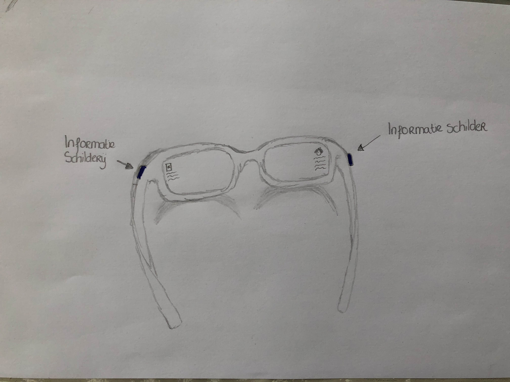
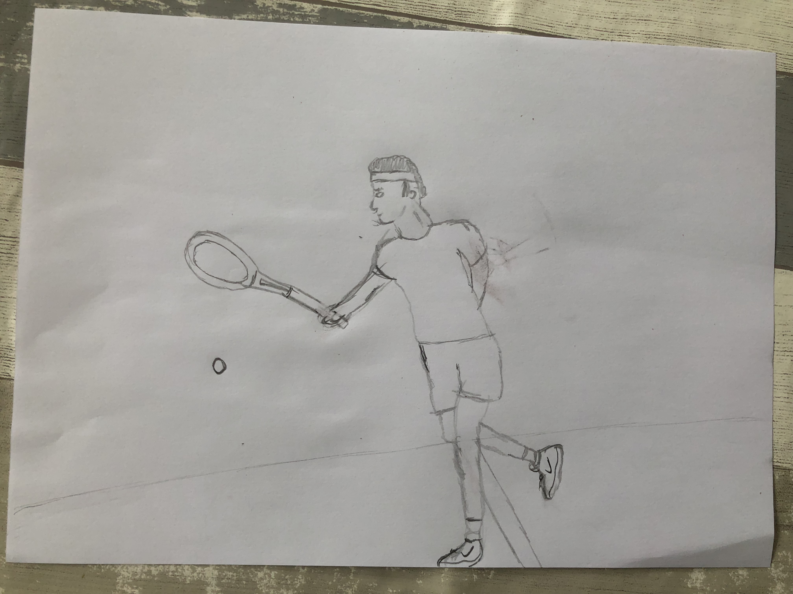
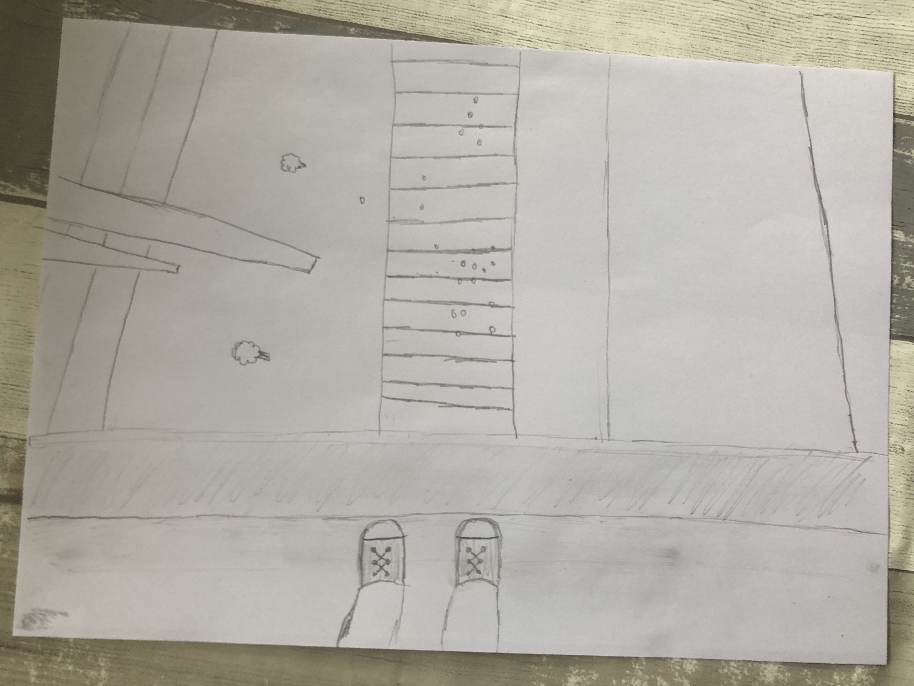

AR &VR
Voor HCI moesten wij een paar concepten bedenken die te maken hebben met VR of AR op bepaalde gebieden. De mogelijkheden met VR en AR zijn groot en worden steeds groter.
Concept
Museum
Voor musea zijn er vele mogelijkheden met AR. Mijn concept was een bril die je kunt lenen bij de informatiebalie (net zoals je nu een audio apparatuur kunt lenen). Als je deze bril opzet zie je eerst niks, maar als je voor een schilderij staat en op het knopje van de zijkant van de bril drukt komt er informatie over het schilderij te staan. Als je weer op het knopje drukt gaat deze informatie weg. Het knopje heb ik bedacht, omdat de meeste mensen naar een schilderij willen bewonderen en als er allemaal informatie bijstaat is dit niet altijd plezierig. Het knopje aan de linkerkant van de bril laat de informatie over het schilderij zien en het rechter knopje laat informatie over de schilder zien.

Movement b>
Je kunt ook mensen laten bewegen door VR. Bijvoorbeeld door een bepaalde sport te pakken zoals tennis. De persoon zet dan de VR bril op en ziet een tegenstander staan waar hij tegen moet spelen. Ook ziet hij de omgeving als hij om zich heen kijkt. De persoon heeft dan het idee dat hij tegen iemand aan het tennissen is en hoeft niet perse naar de tennisbaan en kan dus bijna altijd gaan tennissen. Hierdoor gaat de persoon meer bewegen. Hierbij kan ook nog worden gedacht aan een speciaal tennisracket.

Anxiety
VR kan helpen om mensen die ergens bang voor zijn te helpen. Denk hierbij aan hoogtes, spinnen, vliegen etc. Met VR kun je de mensen met een angst bijvoorbeeld hoogtes, verschillende oefeningen laten doen. Door deze oefeningen raken ze al wat meer gewend aan situaties waarvoor ze bang zijn. Bij hoogtes kan dit bijvoorbeeld zijn over een brug lopen of naar beneden kijken vanaf een bepaalde hoogte. Mensen zetten dan de VR bril op en voeren deze oefeningen uit en krijgen de beleving van bijvoorbeeld hoogte.

Research
Virtual Rijksmuseum
Op Google Arts & Culture kun je door middel van Google StreetView door het Rijksmuseum Amsterdam heen dwalen. Google Arts & Culture is van Google Cultural Institute en samen met behulp van je smartphone en Google Cardboard komt het museum tot leven in Virtual Reality. Zelf ben ik een erge fan van kunst en daarom vind ik dit ook super gaaf. Naast het feit dat dit überhaupt mogelijk is. Ik vind het interessant dat mensen een paar jaar geleden nooit hadden gedacht dat ze zo het Rijksmuseum kunnen meemaken en dat is tegelijkertijd ook erg bijzonder.
Reflection